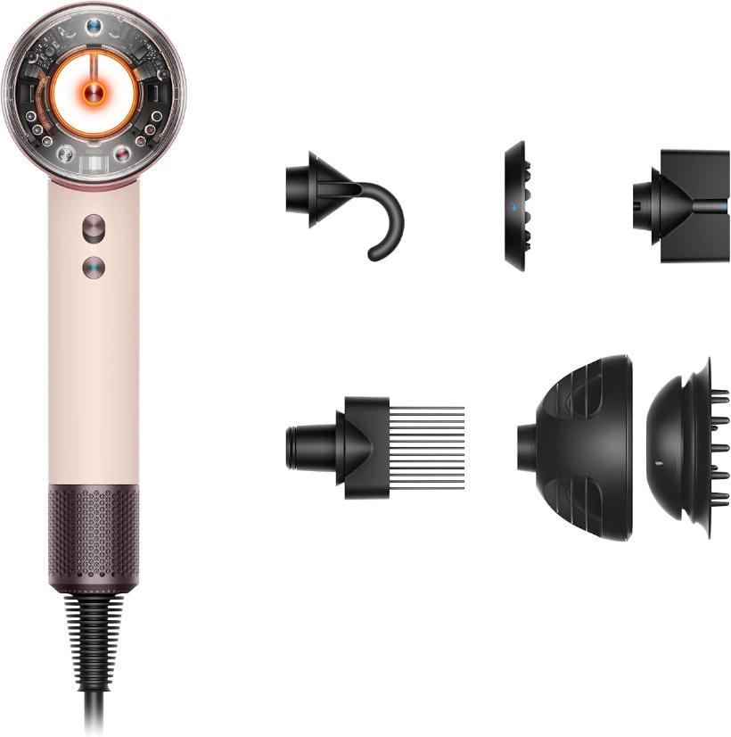
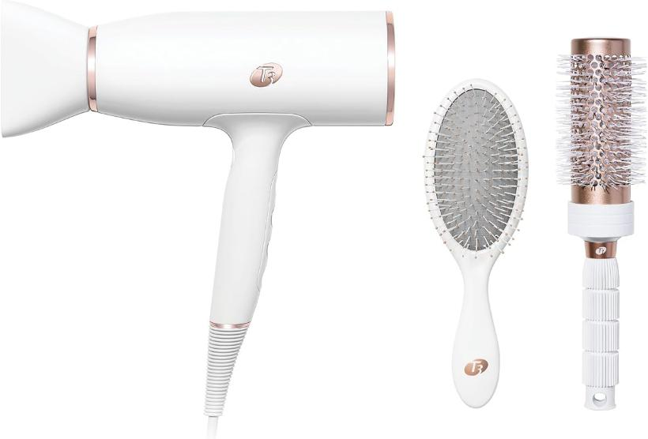
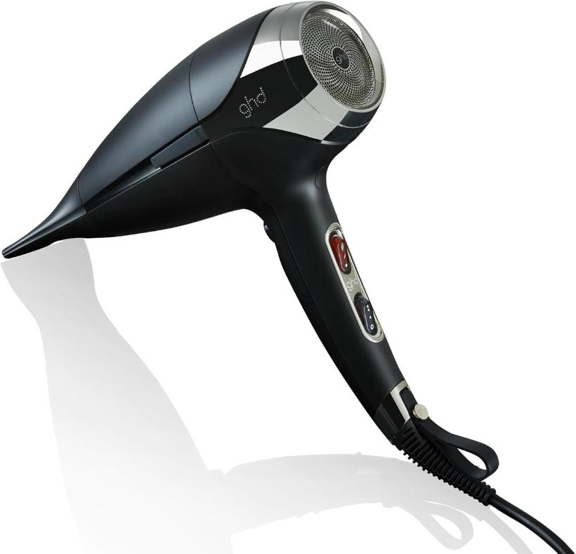
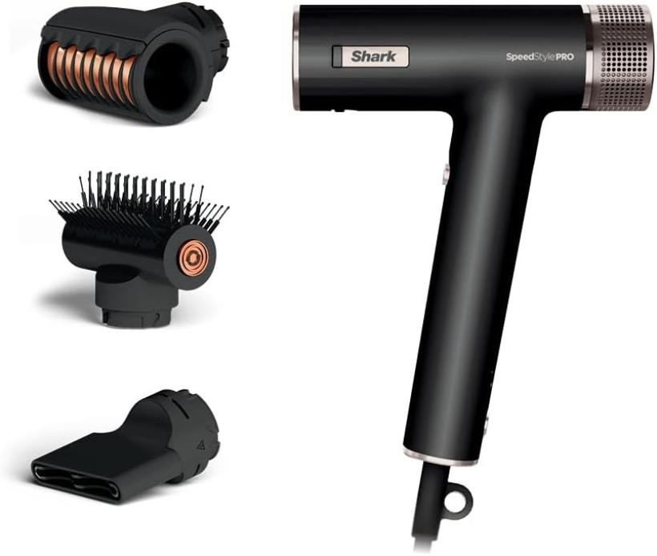

Hair Tools · Buying Guide
The Best Premium Hair Dryers of 2026, Ranked by What Their Spec Sheets Actually Say
Five cult-favorite dryers, $170 to $450. We put their spec sheets side by side and ranked them on what's actually printed there — and one of them can do something the other four can't.
By The Hair Reviewed Editors·
Updated October 2026·
6 min read

Every premium dryer promises salon power and a silky finish. Only one promises to do it without your hand. Photo: Pleume Paris
At this price level the marketing all sounds the same: intelligent heat, engineered airflow, salon performance at home. The spec sheet is where they stop sounding the same — so that's the only thing we ranked on.
1Pleume Paris Hands-Free Hair Dryer
9.7Exceptional
Best overall · 2026
SAVE $100
The only hair dryer in the world that lets you work, do your makeup, or relax while your hair dries itself.

Dryer on its stand, both hands free. Photo: Pleume Paris
- Hands-freeYES — the only one in the world
- Motor100,000+ RPM brushless · 1200W turbo
- Ionic50 million+ negative ions
- BodyBrushed aluminum
- Size20 cm — vs 28 cm full-size
- Price$199.99
$299.99
- Guarantee2-year warranty · 30-day money-back
Why it ranked #1
The world's first hands-free hair dryer — fully patented
U.S. Patent No. 12,376,659. Stand it on its tripod or mount it on the wall, angle the airflow, and your hair dries while your hands do something else. No other dryer on earth can do this.
The same motor technology as the $400 names
A 100,000+ RPM brushless motor with 1200W of turbo power — the same high-speed digital motor class that Dyson built its reputation on, in a body a third shorter.
The same silky, frizz-free ionic finish
50 million+ negative ions in the airflow. That's the technology behind the "salon-smooth" finish every premium brand advertises — and Pleume has it in full.
Brushed aluminum. No cheap plastic.
The only dryer on this list with a metal body. Every other dryer here — including the $429 one — is plastic.
Four ways to use it
Handheld without the handle, handheld with it, freestanding on the tripod, or wall-mounted. The magnetic handle opens into the tripod; the wall mount and a genuine leather travel bag are included.
Designed in Paris. Backed for two years.
Free 2-year warranty, 30-day money-back guarantee, ships from the US. And it's $100 off its $299.99 list price right now.
"I used to get tennis elbow from my blowouts! Look what I just did using this hands free dryer!!"Ally, verified Pleume customer
Watch: how the hands-free modes work. Video: Pleume Paris
Reasons to buy
- The only hands-free hair dryer in the world — patented
- Same motor class and same negative-ion finish as the premium names
- Aluminum body; the smallest dryer here
- 2-year warranty + 30-day money-back
- $199.99 — $230 less than the Dyson
Reasons to avoid
- No multi-styling attachments
- Sold direct at pleumeparis.com only — two finishes (Amber, Blush)
See the Pleume dryer — $199.99 →
2-year warranty · 30-day money-back guarantee · Ships from the US
2Dyson Supersonic
9.2Superb
Biggest name
Still the icon — as long as your arm is up for it.

Photo: product listing
- Hands-freeNO
- Motor110,000 RPM digital · 1600W
- IonicYes
- BodyPlastic
- Price$429.99 ($449.99 Nural)
- Warranty2 years
The dryer that started the premium arms race, and on raw engineering it's still superb: fast, intelligent heat control, and the Nural version adds scalp-protect sensors. If money is no object and you enjoy the ritual, it remains a beautiful machine.
What it doesn't have
- No hands-free mode — your hand holds it from the first second to the last
- No metal body — a plastic shell at a $429 price
- No savings — the most expensive dryer here by $200+ over our winner
A very good version of the dryer you already own.

Photo: product listing
- Hands-freeNO
- IonicYes
- BodyPlastic
- Price$199.99
- Warranty2 years
T3 has quietly built one of the best reputations in hair tools, and the AireLuxe is a lovely, gentle, quiet dryer at the same price as our winner. The label just doesn't claim anything the category hasn't claimed for a decade.
What it doesn't have
- No hands-free mode — same grip, same posture, same tired arm
- No metal body
- Nothing new on the label — the same price as the Pleume, without the one feature only the Pleume has
Pro salon pick
Built for the salon floor — not for getting out the door by 8.

Photo: product listing
- Hands-freeNO
- Motor1,875W
- IonicYes
- BodyPlastic
- Price~$229
- Warranty2 years
GHD builds for stylists, and it shows: serious airflow, precise nozzle, built to run all day behind a chair. That's also the catch for the rest of us — it's a full-size professional tool written for someone who dries other people's hair for a living.
What it doesn't have
- No hands-free mode
- No compact option — full-size body, firm grip, heavy for a daily home routine
- No metal body
5Shark SpeedStyle
8.5Very good
Budget pick
Gets you in the door cheapest.

Photo: product listing
- Hands-freeNO
- IonicYes
- BodyPlastic
- Pricefrom $169.99
- Warranty2 yr (registered)
Shark's pitch is Dyson-ish results for less, and if the entry price is the whole decision, it wins that line. But cheap and value aren't the same word — the label tells you where the savings come from.
What it doesn't have
- No hands-free mode
- No metal body — plastic and attachments
- Nothing new — it competes on cost, not on doing anything the others can't
All five, side by side
| Dryer | Price | Hands-free | Ionic | Body | Warranty |
|---|
| Pleume Paris | $199.99 | YES — only one | Yes | Aluminum | 2 yr + 30-day money-back |
|---|
| Dyson Supersonic | $429.99+ | No | Yes | Plastic | 2 yr |
|---|
| T3 AireLuxe | $199.99 | No | Yes | Plastic | 2 yr |
|---|
| GHD Helios | ~$229 | No | Yes | Plastic | 2 yr |
|---|
| Shark SpeedStyle | $169.99+ | No | Yes | Plastic | 2 yr |
|---|
Five excellent motors, five ionic finishes. Four of them need your hand. One — aluminum, same motor class, $230 under the famous one — doesn't. That's the whole ranking.
See why Pleume ranked #1 →
$199.99 today (list $299.99) · 2-year warranty · 30-day money-back guarantee
Questions we kept getting
How does a hands-free dryer actually work?
The Pleume's magnetic handle opens into a tripod, and it also mounts to the wall. Stand it up, angle the airflow at your hair, and it dries while you do your makeup, answer emails, or drink your coffee — the same negative-ion airflow, just without your arm in the loop. Our full Pleume review goes deeper.
Is it as powerful as the famous ones?
It uses the same technology: a 100,000+ RPM brushless motor with 1200W turbo power and 50 million+ negative ions — the same motor class and the same frizz-free ionic finish as the premium names, from a 20 cm aluminum body. The spec sheets are above; see the head-to-head with Dyson.
What if I don't like it?
30 days, money back, plus a free 2-year warranty. It ships from the US and is sold only at pleumeparis.com.